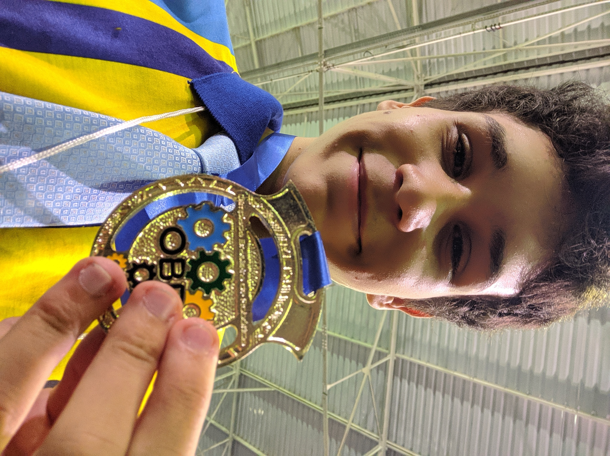

Sobre min:
Meu nome é Vinicios Lugli, tenho 18 anos e moro em São Paulo. Sou estudante de Engenharia de Computação no Instituto de Tecnologia e Liderança(INTELI) de São Paulo.
Sou um apaixonado por tecnologia, desenvolvimento e programação desde meus 12 anos e venho caminhando para me consolidar na área!
Algumas de minhas habilidades:
- Rust - ⭐⭐⭐⭐⭐
- C++ - ⭐⭐⭐⭐
- Python - ⭐⭐⭐⭐
- C# - ⭐⭐⭐
- Ruby/Rails - ⭐⭐⭐
- JavaScript - ⭐⭐⭐
- HTML/CSS - ⭐⭐⭐
Projetos / Participações / Experiências
-
Grande Expreriência com hardware e microcontroladores de baixo nível por conta da participação de competições e feiras de robôtica
-
Criei uma linguagem nomeada "Lugli", com sintaxe de código simples, semelhante a um JavaScript, continua em desenvolvimento, porém já está vem incorporada.
Curiosidades:
-
Uso o thema Monokai Pro Spectrum para todo tipo de ide, e caso não haver, eu mesmo crio uma! Utilizo muito a palheta de cor do mesmo para projetos pessoais também.
-
Sou apaixonado por tecnologias de baixo nível, ou seja, microcontroladores, lingagens como C++ e Rust, criação de jogos sem uso de game engine, refatoração de sources do github...Programação de bases lógicas sem uso de bibliotecas e afins.